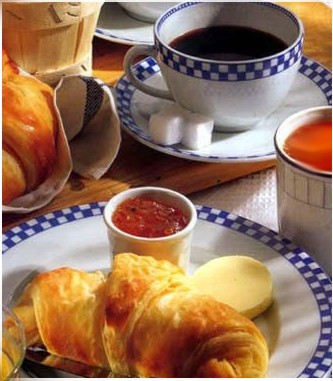

U(Pizza, Birra) = Pizza X Birra
NOTA BENE: l’Utilità è un concetto ordinale e non cardinale, infatti la grandezza precisa del numero che misura l’utilità NON ha nessun significato.
Differenze nella grandezza dell’utilità non hanno alcuna interpretazione per se stesse.
L’utilità tra individui diversi non è in alcun modo comparabile.
Qualsiasi trasformazione di una funzione di utilità che preservi l’ordinamento originale dei panieri è una rappresentazione altrettanto buona delle preferenze quanto la rappresentazione originaria.
Esempio: U=xy, U=xy+2, U=xy–12, U=(xy)2, U=log(xy), U=(xy)1/2, sono tutte funzioni di utilità che rappresentano le stesse preferenze.
Utilità Marginale
Definizione:
l’Utilità Marginale di un bene è la soddisfazione
che il consumatore ottiene dal consumo di una dose in più di
quel bene, tenendo costante il consumo di tutti gli altri beni
del suo paniere.
Esempio: l’utilità marginale dei cornetti alla crema è data dall’utilità addizionale fornita dal consumo di un ulteriore cornetto alla crema quando il consumo di tutti gli altri beni è tenuto costante.
